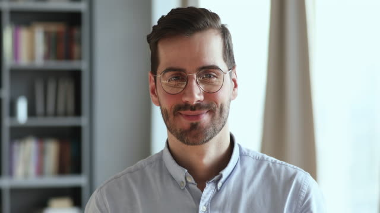
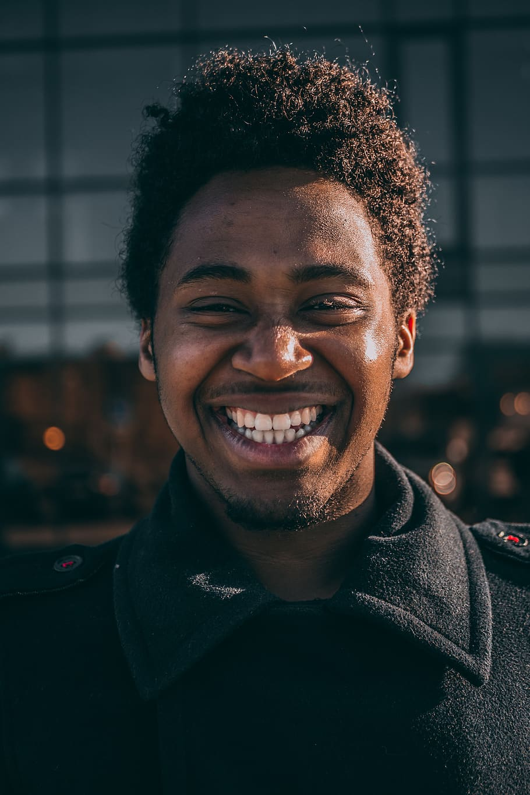

Wung Son: "Recomiendo totalmente a la agencia, realice no hace mucho un Tour para 50 personas en Madrid, soy de Corea y
organizar todo un tour para tantas personas sin conocer Madrid y por la diferencia de horario era bastante complicado por lo que contacté a la agencia,
misma que organizó cada detalle de mi evento sin mayor complicación; Los lugares elegidos por la agencia son de primera clase y calidad así como los guías turísticos.
Recomiendo altamente la agencia ya que cuenta con múltiples opciones y todo el servicio y atención del personal es de alta calidad.
Sin duda nos dejó a los coreanos con excelente sabor de boca!"

Jaden Smith: "Agenda completa en Madrid. Mi viaje incluyó todo tipo de cosas,
globos aerostáticos, recorridos por la ciudad, buena comida, lugares especiales y visitas a los lugares turísticos. Fue simplemente excepcional, con excelentes sugerencias,
reservas, guías, transfers y no solo fue bueno el diseño del viaje, sino que siempre estuvieron se adelantaban a las situaciones y acomodaron los cambios o diferentes planes con éxito.
Todo lo que hice fue disfrutar de los lugares, nos colocaron en una burbuja. Buen trabajo, somos una familia feliz.Absolutamente recomendado, todos los eventos se sincronizaron
perfectamente y las guías, los conductores y el personal fueron tan amables que los adoptamos en nuestras comidas y viajes."
"Leslye Cooper: "Viajar a Madrid es un sueño y hacerlo con una agencia experta hace que todo sea una experiencia increíble.
Tuvimos oportunidad de conocer los lugares mas emblemáticos de la ciudad desde museos, monumentos, atracciones y en cuanto a la parte gastronómica conocimos los mejores restaurantes y platillos.
La logística del tour fue perfecta y la amabilidad de los guías nos hizo sentir en familia aun estando tan lejos de casa.
Recomiendo ampliamente Vuelta al mundo como una agencia para planear vacaciones en grupos grandes, en familia o en pareja.
Se preocupan por cada detalle y toman en cuenta tus necesidades para que cada lugar que conozcas se convierta en una experiencia."

Samuel Emboe: "Vuelta al mundo nos brindó una experiencia increíble. Recibimos una experiencia muy completa y deliciosa.
Vuelta al mundo fue más allá a la hora de incluir detalles especiales en el viaje de cada día. Estos detalles incluyen comer en los mejores restaurantes; ver los mejores bailadores de Flameco de toda España;
escuchar a nuestro guía cantar hermosas canciones en ladino en sinagogas y música antigua en iglesias católicas; una visita especial para ver a los famosos monjes gregorianos cantar durante un servicio;
un gaitero tocando para saludarnos en Finisterre. Cada ubicación tenía un historiador especial y local para proporcionar información profunda en cada región. Nos enamoramos de España. Gracias por una vez por una experiencia de vida."